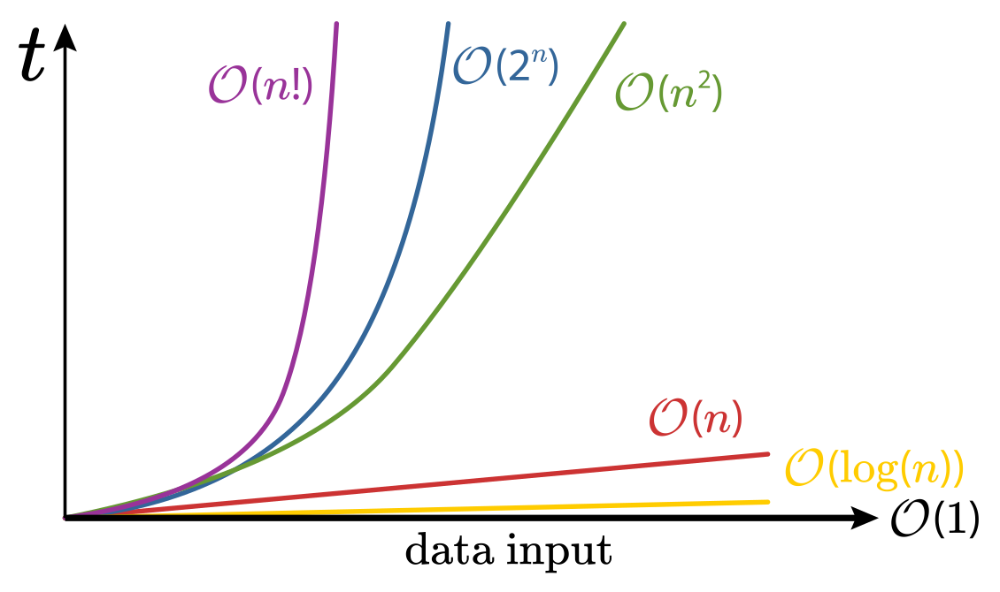

Computational complexity is the estimate of computer resources an algorithm needs to complete a run. In it there's a particular focus on two qualities: time and space.
We should begin by saying time complexity is not the actual hours:minutes:seconds required to execute any particular piece of code. That depends on a myriad of factors like programming language, operating system and processing power.
Instead, time complexity describes how the number of operations an algorithm performs changes with its input size. If our input doubles in size, do the number of operations performed also double? Does it stay the same? What if our input get smaller?
The space complexity of an algorithm is the amount of memory it requires for a run. Similar to time complexity, this is measured relative to changes in input size.
It’s sum is space complexity = auxiliary space + input space.
Auxiliary space is defined as all the memory used inside the algorithm itself (think variables, loops, data structures, etc). In contrast, input space is the memory used for the data that goes into the algorithm for processing. Differentiating that, when comparing different algorithms' space complexity, we would only consider auxiliary space since they’re solutions accepting the same input.
An algorithm is said to have constant time or space, O(1), when the resources it uses is independent of input. Simply -- it completes the same number of tasks and uses the same amount of memory no matter the input size.
An algorithm is said to be logarithmic, O(log n), when the time and space used begins at the inputs initial length, but is divided by some constant (usually two) each iteration until its less than or equal to 1.
An algorithm is said to be linear, O(n), when it's time and memory increases proportionally (1 to 1) with its input size. This occurs in cases when we have input data that needs to have every value inside it processed, and each of those assessments is constant, O(1). This growth can be understood as cn, where c = 1 and n = input length.
An algorithm is said to be quadratic, O(n2), when its resources increases proportionally to the squared size of the input length. This occurs in cases when we have data that needs to have every value inside it processed, but each of those assessments must process the entire length of the original input with it.
An illustration of how increasing input lengths affect different big-o complexities:
